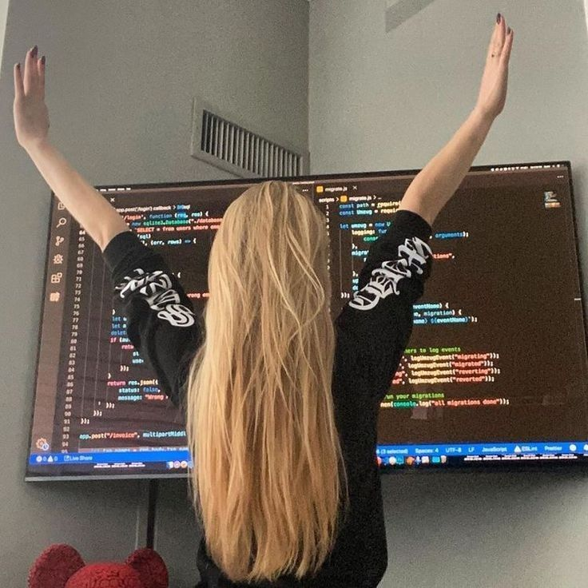

♡Programa Conmigo♡
Esta es una pagina de cursos gratuitos que te ayudaran a ingresar al mundo de la programacion.¿Que esperas? ¡Ingresa yaa!
EmpezamosEsta es una pagina de cursos gratuitos que te ayudaran a ingresar al mundo de la programacion.¿Que esperas? ¡Ingresa yaa!
EmpezamosAlgún contenido de marcador de posición representativo para la primera diapositiva del carrusel.
Algún contenido de marcador de posición representativo para la segunda diapositiva del carrusel.
En estos cursos de desarrollo web con HTML, CSS y Javascript, aprenderas a crear sitios web de una forma entretenida y practica. Esta es la primera columna.
Curso de Visual Studio Code en el que aprenderemos a trabajar con este estupendo editor de código gratuito, para nuestra tarea diaria como desarrolladores. Esta vez, hemos pasado a la segunda columna.
Aprende a diseñar sitios web adaptables a cualquier dispositivo con Bootstrap. Descubre cómo trabajar con maquetados fluidos, grillas y formularios.
Aprende a trabajar con git, conceptos básicos, clonar un repositorio y gestionar tus proyectos alojándolos en tu repositorio local y en GitHub.Esta es la primera columna.
Otro fragmento emocionante de contenido de marcador de posición representativo. Esta vez, hemos pasado a la segunda columna.
No tengas miedo al exito, sigue tus sueños y verás tus triunfos.
Algunas de las cosas más interesantes que aprenderás a lo largo del curso son las siguientes:
¿Otro largometraje? Por supuesto. Si te interesa el desarrollo web y estás buscando herramientas y programas que te ayuden a desarrollar, Visual Studio Code es la herramienta que necesitas. En este post, desarrollaremos un tutorial de Visual Studio Code para principiantes programación
En este post encontrarás:
ocultar
Bootstrap 5 es la nueva versión del popular frameworks de front-end. Incluye una serie de nuevas características y mejoras, lo que facilita aún más la creación de sitios web responsivos y orientados a los dispositivos móviles. En este curso, tendrás una guía completa paso a paso para aprender Bootstrap 5 desde cero. Empezaremos por cubrir los aspectos básicos del framework, incluyendo su sistema de rejilla y su tipografía. Luego pasaremos a temas más avanzados como los formularios y los botones. Y cuando termines el curso tendrás todo conocimiento que necesitas para construir sitios web responsivos con Bootstrap 5. Así que ¡comencemos! Tu contenido.